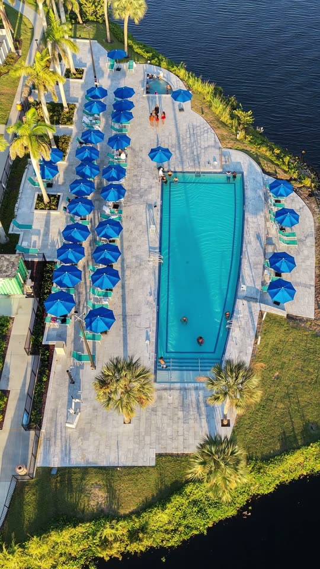

All-Inclusive Resort · Port St. Lucie, Florida
voco Sandpiper
Social b-roll, first cuts. One 12-second vertical edit of four riverfront scenes, cut to the beat of five different music directions. Each version has its own page; choose the track you like and we take it from there.
Final cuts
Camp & Cinematic11.6s · 103 BPM
French New Wave12.9s · 112 BPM
Italian Pop11.1s · 108 BPM

Italian Art Pop12.8s · 94 BPM
French Art Pop12.2s · 98 BPM
Every version uses the same four shots in the same order: aerial pool, riverside dining, sunset pool, river sunset. Only the music and the timing of the cuts change. Format: 9:16, 1080×1920, 30 fps, ready for Reels.